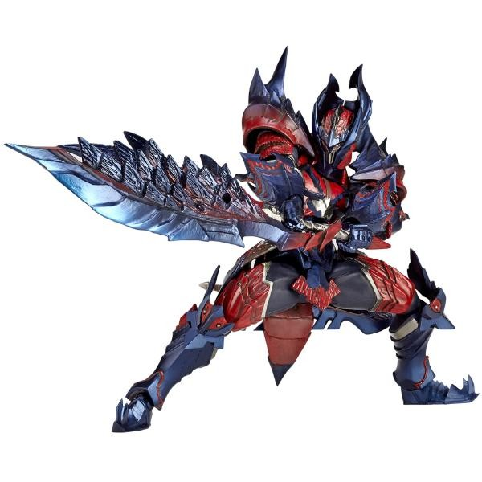
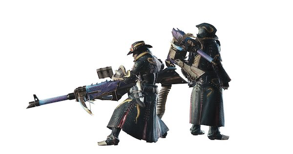

モンスターハンター
ハンター
フィールド
モンスター
トップページへ

ハンターにも種類があり、大きく分けて２種類。そのうちの一つが剣士である。
剣士はモンハン初心者から上級者までもが使う役職で、近接で戦います。私も剣士を愛用しています。

二つ目はガンナー。ガンナーは近接ではなく、遠距離からモンスターを攻撃する武器を持ちます。
剣士に比べ、防御力の低い防具を身につけているため被ダメージが大きいが弱点。